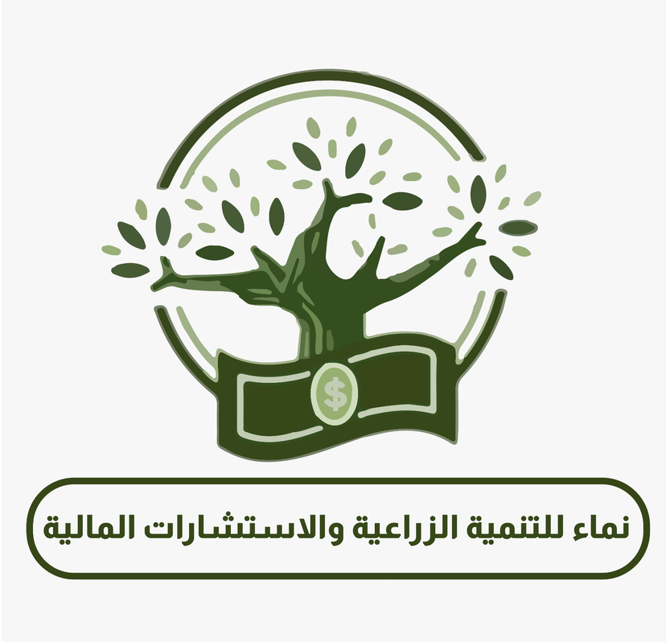

نجمع بين التحليل المالي الدقيق وفهمٍ عميق لفرص الاستثمار الزراعي، لنحوّل أرقام مشروعك إلى قرارات واضحة قابلة للتنفيذ.
نماء للتنمية الزراعية والاستشارات المالية — شركة متخصصة في تقديم الاستشارات والحلول المالية والتنموية للشركات والمصانع والمشروعات والمستثمرين.
بدأت رحلتنا عام 2019 تحت اسم «كايزن للاستشارات المالية»، حيث قدّمنا خدمات الاستشارات المالية ودعمنا الشركات وأصحاب الأعمال في دراسة المشروعات وتحليل أوضاعها المالية.
وفي عام 2023 انطلقنا باسم «نماء» برؤية أوسع تجمع بين الاستشارات المالية والتنمية والاستثمار، مع اهتمام خاص بالمشروعات الزراعية والإنتاجية والتجارية.
أن نكون شريكًا موثوقًا للشركات والمستثمرين وأصحاب المشروعات، وأن نساهم في بناء كيانات أكثر قوة واستدامة من خلال حلول مالية وتنموية عملية قائمة على الدراسة والتحليل.
تقديم استشارات مالية وتنموية تساعد الشركات على فهم وضعها المالي الحقيقي، وتحسين كفاءة مواردها، وإدارة سيولتها، ودراسة فرص الاستثمار والتوسع، واتخاذ قرارات مبنية على بيانات وتحليل واضح.
اضغط على أي خدمة لاستكشاف تفاصيلها
نساعد الشركات والمشروعات على فهم وتحليل أوضاعها المالية بشكل شامل، ونقدّم توصيات عملية لتحسين الأداء ودعم القرار.
تنفيذ وإعداد دراسات جدوى متكاملة للمشروعات الجديدة وخطط التوسع، تدعم قرار البدء أو التوسع بثقة.
نساعد الشركات وأصحاب المشروعات في دراسة احتياجاتهم التمويلية وإعداد التصورات المالية اللازمة.
حلول عملية للشركات التي تواجه تحديات في الأداء أو السيولة أو الربحية.
نموذج الإدارة المالية المتخصصة من الخارج، لتستفيد شركتك من خبرة مالية متكاملة بكفاءة تكلفة.
ندرس ونقيّم الأعمال والمشروعات بأساليب مالية دقيقة لدعم قراراتك المصيرية.
ندعم المستثمرين وأصحاب الأعمال في دراسة الفرص واتخاذ القرار الاستثماري الواثق.
اهتمام خاص بالمشروعات الزراعية والإنتاجية — الميزة التي تجمع في نماء بين الرؤية المالية وفهم طبيعة القطاع.
نساعد الشركات على تطوير أدائها وبناء خطط نمو واقعية قابلة للقياس.
رحلة مهنية بدأت منذ عام 2019 في مجال الاستشارات المالية ودعم الشركات.
خبرات في البنوك والإدارة المالية وإدارة الشركات والتخطيط وتحليل المشروعات.
لا نكتفي بإعداد التقارير، بل نقدّم حلولًا قابلة للتطبيق والقياس.
نجمع بين التحليل المالي والرؤية الإدارية والتنموية في منظومة واحدة.
علاقات مستمرة مع عملائنا ودعم حقيقي في كل مراحل النمو والتطوير.
لكل شركة ظروفها وتحدياتها، لذلك نتبع مسارًا واضحًا من ست خطوات في كل مشروع
نبدأ بفهم طبيعة نشاط الشركة أو المشروع وسياقه وأهدافه.
نجمع البيانات المالية والتشغيلية اللازمة لبناء صورة دقيقة عن الوضع الحالي.
نحلل البيانات لتحديد نقاط القوة والتحديات الفعلية التي تواجه النشاط.
نحدد بوضوح ما يعيق النمو وما يمكن استثماره من فرص حقيقية.
نترجم نتائج التحليل إلى خطط وحلول مالية عملية قابلة للتطبيق.
نرافق فريق العمل في تنفيذ الخطة ومتابعة النتائج أولاً بأول.
يتولى قيادة الإدارة التنفيذية للشركة والعمل على تطوير خدماتها وتعزيز دورها كشريك استشاري للشركات والمشروعات والمستثمرين، مع التركيز على تقديم حلول عملية تدعم النمو والاستدامة.
تضم نماء فريقاً متعدد الخبرات من ذوي الخبرة في مجالات البنوك، الإدارة المالية، إدارة الشركات، التخطيط وتحليل المشروعات.
سواء كنت تدير شركة أو مصنعاً، أو تدرس فرصة استثمارية زراعية — نسعد بمناقشة احتياجاتك المالية.
نماء للتنمية الزراعية والاستشارات المالية — شريككم في تحويل الأرقام إلى قرارات، ودعم مشروعاتكم من الفكرة إلى النمو.